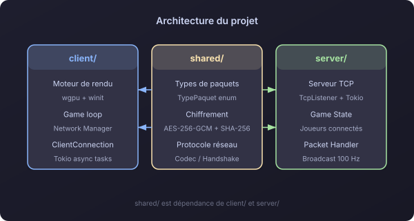
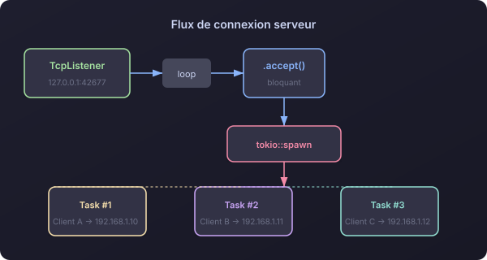
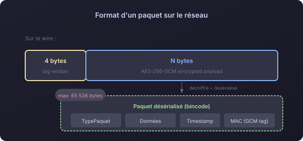
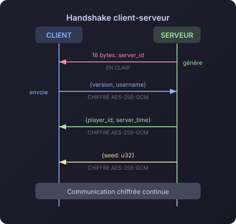
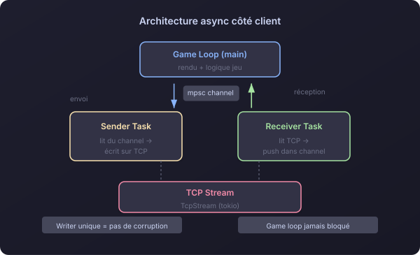
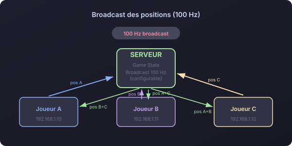
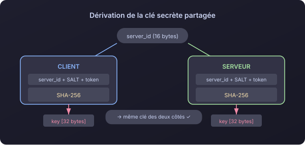
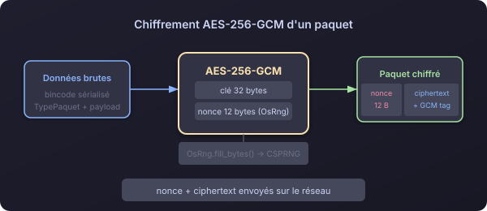
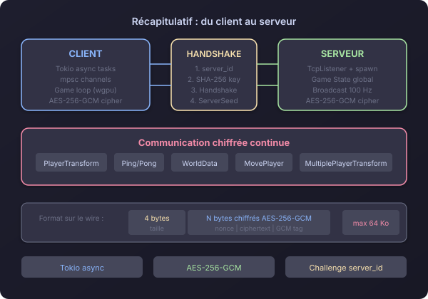

Satisfactorio - Comment le réseau fonctionne en interne
Posté le 6 mai 2026
J'ai récemment travaillé sur Satisfactorio, une ébauche de jeu voxel multijoueur en Rust développé from scratch avec @StrachyDev. Le projet ayant atteint un stade très correct de maturité, j'ai souhaité vous faire part de l'architecture et du système réseau que j'ai implémenté pour relier le client et le serveur. (Ça me permettra aussi d'avoir une trace du système et son évolution pour la suite du projet)

Les bases
Le jeu tourne en TCP avec Tokio pour l'asynchrone et bincode pour la sérialisation. Le serveur écoute par défaut sur 127.0.0.1:42677, et chaque connexion entrante se voit attribuer sa propre tâche tokio.

Format d'un paquet sur le réseau

Taille max : 64 Ko. Les types de paquets couvrent les besoins classiques d'un jeu :
pub enum TypePaquet {
Handshake, HandshakeAck,
PlayerTransformation, MultiplePlayerTransformation,
ServerSeed, WorldData,
MovePlayer, Ping, Pong,
}
Le handshake
C'est la partie la plus intéressante. Voici comment client et serveur établissent la connexion :

- Le serveur génère un
server_idde 16 bytes viagetrandom(CSPRNG) et l'envoie au client - Le client dérive une clé de 32 bytes avec SHA-256 :
hash(server_id + SALT + token) - Le serveur fait le même calcul de son côté → les deux ont la même clé
- Le client envoie le Handshake chiffré, le serveur répond avec le
player_idet laServerSeed - Toute la communication suivante est chiffrée
L'architecture async côté client
Après le handshake, deux tâches tournent en background :

- Sender Task — Lit depuis un canal
mpscet écrit sur le TCP stream. Un seul writer évite la corruption des données par écritures concurrentes. - Receiver Task — Lit en continu depuis le stream et pousse les paquets dans un canal. Le game loop principal n'est jamais bloqué.
Côté serveur, chaque client a sa task dédiée et les positions sont broadcastées à 100 Hz.

Le chiffrement AES-256-GCM
Dérivation de la clé

pub fn compute_shared_secret(server_id: &[u8], token: &[u8]) -> [u8; 32] {
let mut hasher = Sha256::new();
hasher.update(server_id);
hasher.update(SALT);
hasher.update(token);
hasher.finalize().into()
}
Client et serveur dérivent la même clé indépendamment grâce au server_id. C'est un schéma de type pre-shared key basé sur un challenge.
Chiffrement

pub fn aes_encrypt(data: &[u8], cipher: &Aes256Gcm) -> Result<Vec<u8>, _> {
let mut nonce_bytes = [0u8; 12];
OsRng.fill_bytes(&mut nonce_bytes);
let nonce = Nonce::from_slice(&nonce_bytes);
let mut payload = cipher.encrypt(nonce, data)?;
let mut output = nonce_bytes.to_vec();
output.append(&mut payload); // nonce + ciphertext
Ok(output)
}
Chaque paquet est chiffré avec un nonce aléatoire de 12 bytes généré par OsRng. Le nonce est préfixé au ciphertext pour que le récepteur puisse déchiffrer. AES-256-GCM fournit chiffrement et authentification (MAC intégré).
En résumé

Satisfactorio a une base réseau propre : Tokio pour l'async, des channels mpsc pour séparer reading/writing, et AES-256-GCM pour chiffrer les échanges.